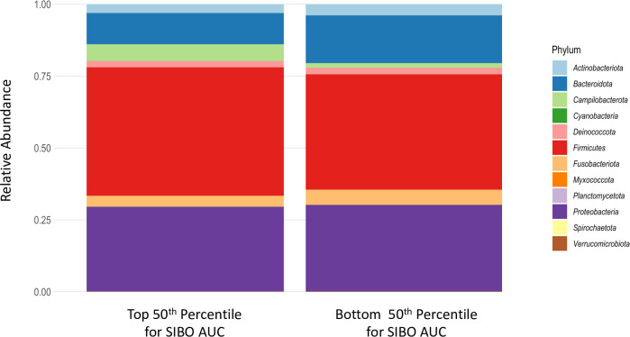
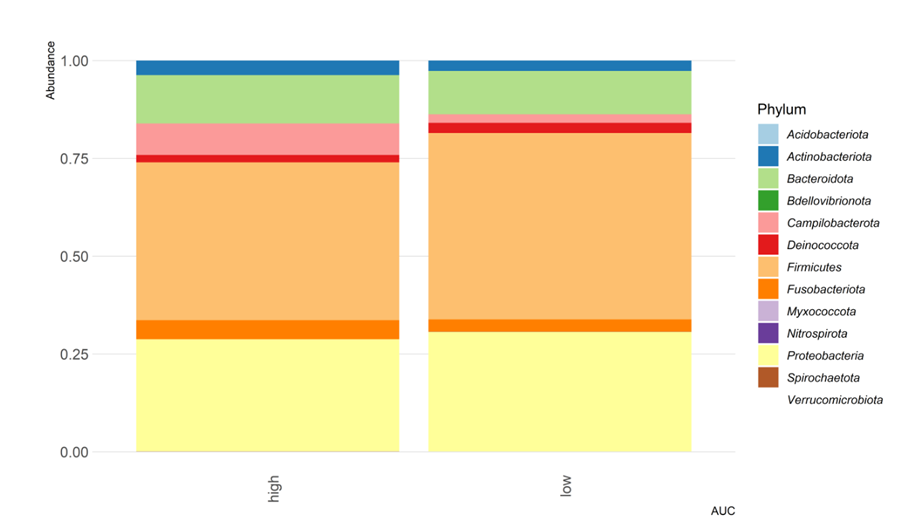

Chapter 8 Reproducable science article
In dit gedeelte van het portfolio wordt er gekeken naar reproduceerbaarheid vanuit artikelen die online staan. Het arikel dat gekozen is heet:,Small Intestine Bacterial Overgrowth is associated with increased Campylobacter and epithelial injury in duodenal biopsies of Bangladeshi children. Van dit artikel wordt een samenvatting gemaakt, waarna de reproduceerbaarheid wordt bepaald. Als laatst wordt de R code in het artikel uitgevoerd om te kijken of dezelfde resultaten verkregen kunnen worden.
8.1 Artikel informatie
Titel: Small Intestine Bacterial Overgrowth is associated with increased Campylobacter and epithelial injury in duodenal biopsies of Bangladeshi children (Fahim et al. 2024). Link to website
Environmental enteric dysfonction (EED) is een asymptomatisch syndroom waarbij de dunne darm ontstoken raakt en niet meer effectief nutriënten kan opnemen, wat kan zorgen voor een negatieve impact op de groei en ontwikkeling van kinderen. Dit syndroom komt veel voor in lagen- en middeninkomtslanden, waarbij slechte hygiëne vaak aanwezig is. Uit onderzoek is gebleken dat een deel van de kinderen met EED small intestine bacterial overgrowth (SIBO) hebben.SIBO is een dysbiose van de dunne darm waarbij er teveel bacteriën groeien.
Het doel van dit onderzoek was om te bepalen of SIBO en EED een verband hadden in kinderen uit Bangladesh met als hypothese dat er een verband is en dat mucosa-adherende bacteriën significant zouden verschillen in SIBO positieve kinderen en SIBO negatieve kinderen.
De kinderen werden geselecteerd op bepaalde ciriteria, esophagogastroduodenoscopy werd uitgevoerd en bbiopsies van de twaalfvingerige darm werden genomen. Deze biopsies werden gelijk onderzocht onder de microscoop en daarna bewaard voor DNA extractie, gevolgd door 16srRNA gene sequencing. Voor de histlogische analyses werden de biopsies gefixeerd en werden de weefselcoupes beoordeeld volgens een index gerelateerd met de mate van ontsteking van de dunne darm. SIBO werd getest door glucose-hydrogen-breath testing (GHBT) en de samples werden geanalyseerd door gas chromatografie. De samples werden ingedeeld in SIBO positief of SIBO negatief. Statistische analyses werden uitgevoerd door te kijken naar non-parametische testen, alphaa- en bèta diversiteit.
Van de geteste kinderen hadden 12.7% SIBO, en er werd geen significant verschil gevonden tussen de histologische elementen van SIBO positieve en SIBO negatieve kinderen. Wat opviel was dat kinderen met SIBO een veel hogere abundantie hadden in Campylobacter dan kinderen zonder SIBO. Ook werd er een verband gevonden tussen SIBO en enterische ontstekingen bij EED kidneren, wat kan leiden tot de conclusie dat campylobacter in de duodenum epitheel kan beschadigen.
8.2 reproduceerbaarheid articel
In het tweede gedeelte wordt het artikel beoordeeld op repoduceerbaarheid waarbij er gekeken wordt naar verschillende beoordelingscriteria.
Over het algemeen is het artikel reproduceerbaar. Het doel is duidelijk weergeven aan het einde van de inleiding. Er wordt aangegeven op welke site de data gevonden kan worden en waar de data uit bestaat, zoals de metadata en code. Ook wordt er aangegeven in het artikel waar de studie is uitgevoerd en hoe de eerste uitgever bereikt kan worden. Ook staat er een etische statement en een funding statement en is de code makkelijk te gebruiken. De algemene indruk is dus erg positief.
8.3 reproduceerbaarheid R code
Om te kijken of de code ook reproduceerbaar wordt de code in de data availability uitgevoerd om te kijken of de resultaten hetzelfde zijn als de grafieken in het artikel. Bij het downloaden van de zit geen README bestand en is het ook niet duidelijk welk script voor welk doel was. In de zip folder zat een R script, een Rmarkdown bestand, een R object en 5 datasets. Het R script was onduidelijk, maar het Rmarkdown bestand was makkelijk te lezen, aangezien er veel pseudocoding werd gebruikt om de verschillende stappen uit te leggen.
In het Rmarkdown bestand werden de verschillende analyses uitgevoerd. Nadat de data was ingeladen werden datasets samengevoegd en werden de verschillende taxa gefilterd. Daarna werden alpha en beta diversity analyses uitgevoerd om te kijken naar het verschil in SIBO positieve en SIBO negatieve kinderen. Alpha diversity werd gemeten met de Shannon index en de Wilcoxon test werd uitgevoerd om te kijken of er een singificant verschil is. Daarna werd er gekeken naar de beta diversity door een Principle Coordinates Analysis (PCoA) uit te voeren. Daarna werd er gekeken naar de significantie tussen de verschillende taxa met de de DESeq2 R package. The area under the curve bij 50% werd berekend en verdeeld in twee groepen, low en high. Daarna werden de histologische resultaten vergeleken met 16srRNA doormiddel van een PERMANOVA test, specifiek voor twee histologische parameters. Hierbij werden de alpha en beta diversity op dezelfde manier als eerder benoemd berekend. Als laatste in de anlayse werd de algemene microbiële compositie onderzocht. Hierbij werden de taxa op phylum level uitgeplot waarbij er naar de abudantie gekeken werd. Over het algemeen zou ik de leesbaarheid van de code op een schaal van 1 tot 5 een 3 geven, aangezien de pseudocoding veel uitleg gaf, maar er nog wel veel onduidelijk was waar sommige bestanden voor waren.
Tijdens het uitvoeren van het markdown bestand kwam ik tegen wat kleine dingen aan. Als eerst zou ik de packages installeren in de code, aangezien dit nu handmatig gedaan moest worden. Daarnaast stonden de datasets in de code in een ander format dan in de folder. Ook kwamen sommige pathways met het inlezen van de data niet overeen met de folderstructuur. Dit zijn dingen die makkelijk verandert kunnen worden. Na het aanpassen van deze dingen kon de hele code in het Rmarkdown bestand uitgevoerd worden. De grafieken die uit de bestanden kwamen, leken op de grafieken in het artikel, maar waren toch net wat anders. In figuur x is de grafiek te zien die in het artikel stond en figuur x is de grafiek die gemaakt is door de R code te gebruiken. Ze lijken erg op elkaar, maar er zijn toch wat kleine verschillen.

Figure 8.1: fig x: Figure in article

(#fig:code_article)fig x: Figure created by code
Op een schaal van 1 tot 5 zou ik de reproduceerbaarheid van de R code een 3 geven, aangezien de grafieken niet hetzelfde zijn, maar wel op elkaar lijken. Dit komt waarschijnlijk doordat er nog wat vervolg stappen zijn gedaan in het uitwerken van de data die niet in de code staan.